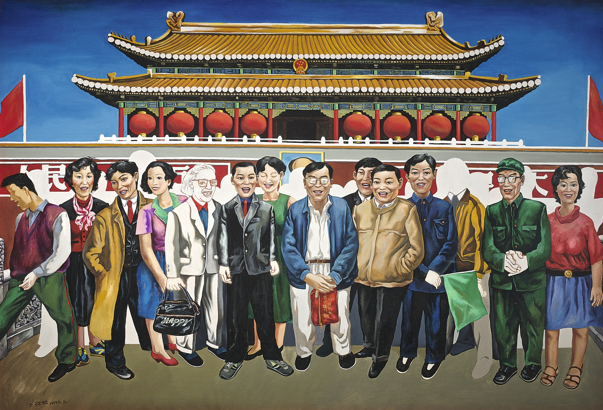

To parody the previous artwork, Wang Jinsong’s depiction of Tiananmen Square as a busy tourist location mocks the seriousness of Tiananmen as a historical and cultural chinese symbol. Mao Zedong’s head is no longer clearly visible. There is a loss of identity of the chinese people in this painting. Everyone is dressed the same, with a strong presence of westernization in the clothing and accessories they wear. No one is interacting intimately unlike in Sun Zixi’s work, everyone offers a soulless smile to the camera. The white figures floating in the background that block off the view of Mao Zedong I interpreted as western tourists indifference to any historical symbolism that Tiananmen holds. This painting seems to communicate the loss in Chinese culture westernization is the catalyst of, a fall from grace Tiananmen Square had as a Chinese symbol.

Taking a picture in front of Tiananmen Square, by Wang Jinsong. Oil on canvas, 125.5 x 184 cm. Hanart TZ Gallery. 1994.